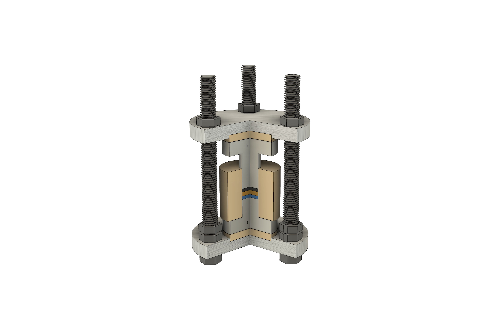
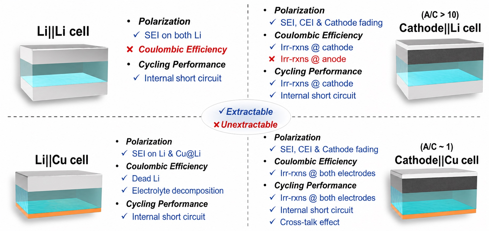
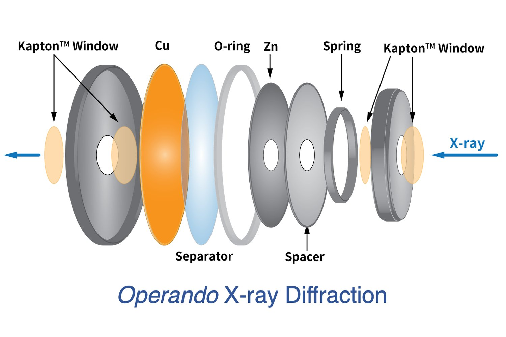
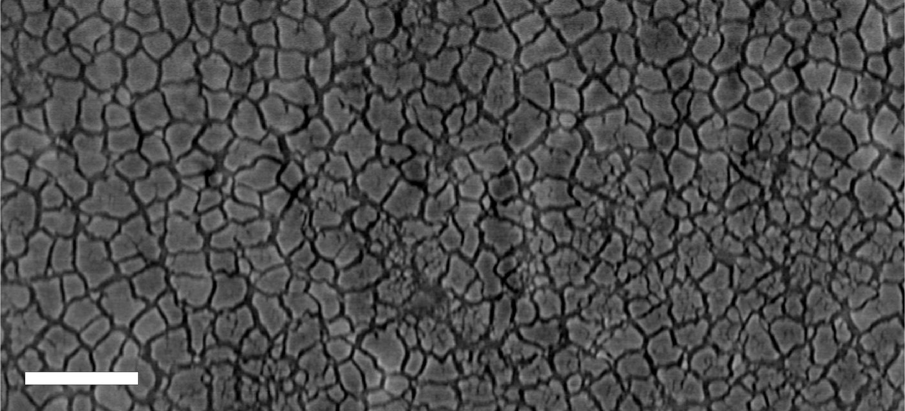
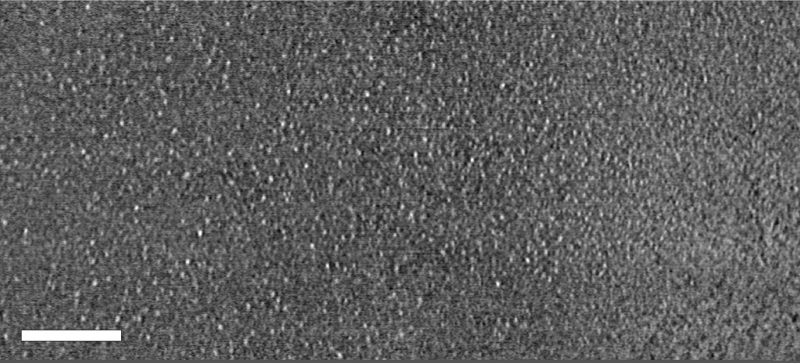

全固態電池
為更安全、更高能量密度的電池設計電極與電解質架構，並透過界面工程延長電池壽命。
儲能材料影像與光譜分析實驗室（CJHuang Group）致力於連結基礎材料科學與實際儲能應用，開發新世代電池化學體系，聚焦於全固態電池與無負極鋰金屬電池。
本實驗室的特色在於將先進的多尺度分析技術與材料開發緊密結合。我們運用臨場（operando）光譜與三維 X 光斷層掃描，直接觀察電化學界面的演變過程，將失效機制的觀察轉化為設計準則。

為更安全、更高能量密度的電池設計電極與電解質架構，並透過界面工程延長電池壽命。

不使用負極活性材料，鋰金屬在首次充電時直接沉積於集流體上。我們設計電池與電解質，讓鋰均勻沉積、可逆剝除。

即時觀察反應進行：在電池實際運作下，進行同步輻射 X 光光譜與繞射分析。

重建運作中電池的內部結構：解析失效模式與微結構形貌，並回饋於電池設計。
全固態軟包電池中 µ-Si 負極的俯視 X 光斷層切片：組裝後與循環後。拖曳分隔線比較：原本分布均勻的顆粒，循環後形成泥裂紋狀的裂紋網絡。以非破壞、三維的方式看見失效，才能把觀察轉化為設計準則。 我們如何拍攝電池內部


與化工系講座教授黃炳照共同率領團隊，以全固態電池計畫「Sprout Solid-State Power Research for Ultra-safe Technology」獲得能源組亞軍。團隊結合無溶劑乾式電極製程與矽負極薄膜技術；充滿電的全固態軟包電池在穿刺與裁切測試中幾乎沒有明顯升溫。臺科大新聞
獲獎〈A physics-based model explaining stress-induced degradation in composite cathode for all-solid-state batteries〉，與 T. Hu、Y. S. Meng、B. Barua 合作發表。閱讀論文
論文黃貞睿助理教授獲選為教育部玉山青年學者（2026–2031）。
獲獎黃貞睿博士加入國立臺灣科技大學化學工程系擔任助理教授，成立研究團隊。
公告研究、成員、論文與招生資訊一站整合。對碩博士班或大學部專題有興趣，歡迎透過「加入我們」頁面與我們聯繫。
公告〈X-ray Micro-Computed Tomography for Structural Analysis of All-Solid-State Battery at Pouch Cell Level〉：於軟包電池尺度，完整應用 X 光微電腦斷層掃描分析運作中的全固態電池。閱讀論文
論文